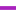

<!doctype html>
<html lang="en">
    <head>
        <meta charset="utf-8">
        <meta http-equiv="X-UA-Compatible" content="IE=edge">
        <meta name="viewport" content="initial-scale=1,user-scalable=no,maximum-scale=1,width=device-width">
        <meta name="mobile-web-app-capable" content="yes">
        <meta name="apple-mobile-web-app-capable" content="yes">
        <link rel="stylesheet" href="css/leaflet.css">
        <link rel="stylesheet" href="css/L.Control.Layers.Tree.css">
        <link rel="stylesheet" href="css/qgis2web.css">
        <link rel="stylesheet" href="css/fontawesome-all.min.css">
        <link rel="stylesheet" href="css/filter.css">
<link rel="stylesheet" href="css/nouislider.min.css">
        <link rel="stylesheet" href="css/leaflet-control-geocoder.Geocoder.css">
        <link rel="stylesheet" href="css/leaflet-measure.css">
        <style>
        html, body, #map {
            width: 100%;
            height: 100%;
            padding: 0;
            margin: 0;
        }
        </style>
        <title>NWL Waters</title>
    </head>
    <body>
        <div id="map">
        </div>
        <script src="js/qgis2web_expressions.js"></script>
        <script src="js/leaflet.js"></script>
        <script src="js/L.Control.Layers.Tree.min.js"></script>
        <script src="js/leaflet.rotatedMarker.js"></script>
        <script src="js/leaflet.pattern.js"></script>
        <script src="js/leaflet-hash.js"></script>
        <script src="js/Autolinker.min.js"></script>
        <script src="js/rbush.min.js"></script>
        <script src="js/labelgun.min.js"></script>
        <script src="js/labels.js"></script>
        <script src="js/leaflet-control-geocoder.Geocoder.js"></script>
        <script src="js/leaflet-measure.js"></script>
        <script src="js/tailDT.js"></script>
<script src="js/nouislider.min.js"></script>
<script src="js/wNumb.js"></script>
        <script src="data/Sites_1.js"></script>
        <script src="data/Pipes_2.js"></script>
        <script src="data/Chambers_3.js"></script>
        <script>
        var map = L.map('map', {
            zoomControl:false, maxZoom:28, minZoom:1
        })
        var hash = new L.Hash(map);
        map.attributionControl.setPrefix('<a href="https://github.com/tomchadwin/qgis2web" target="_blank">qgis2web</a> &middot; <a href="https://leafletjs.com" title="A JS library for interactive maps">Leaflet</a> &middot; <a href="https://qgis.org">QGIS</a>');
        var autolinker = new Autolinker({truncate: {length: 30, location: 'smart'}});
        // remove popup's row if "visible-with-data"
        function removeEmptyRowsFromPopupContent(content, feature) {
         var tempDiv = document.createElement('div');
         tempDiv.innerHTML = content;
         var rows = tempDiv.querySelectorAll('tr');
         for (var i = 0; i < rows.length; i++) {
             var td = rows[i].querySelector('td.visible-with-data');
             var key = td ? td.id : '';
             if (td && td.classList.contains('visible-with-data') && feature.properties[key] == null) {
                 rows[i].parentNode.removeChild(rows[i]);
             }
         }
         return tempDiv.innerHTML;
        }
        // add class to format popup if it contains media
		function addClassToPopupIfMedia(content, popup) {
			var tempDiv = document.createElement('div');
			tempDiv.innerHTML = content;
			if (tempDiv.querySelector('td img')) {
				popup._contentNode.classList.add('media');
					// Delay to force the redraw
					setTimeout(function() {
						popup.update();
					}, 10);
			} else {
				popup._contentNode.classList.remove('media');
			}
		}
        var title = new L.Control({'position':'topleft'});
        title.onAdd = function (map) {
            this._div = L.DomUtil.create('div', 'info');
            this.update();
            return this._div;
        };
        title.update = function () {
            this._div.innerHTML = '<h2>NWL Waters</h2>';
        };
        title.addTo(map);
        var abstract = new L.Control({'position':'bottomright'});
        abstract.onAdd = function (map) {
            this._div = L.DomUtil.create('div',
            'leaflet-control abstract');
            this._div.id = 'abstract'

                abstract.show();
                return this._div;
            };
            abstract.show = function () {
                this._div.classList.remove("abstract");
                this._div.classList.add("abstractUncollapsed");
                this._div.innerHTML = 'Interactive Map for NWL - Case Study';
        };
        abstract.addTo(map);
        var zoomControl = L.control.zoom({
            position: 'topleft'
        }).addTo(map);
        var measureControl = new L.Control.Measure({
            position: 'topleft',
            primaryLengthUnit: 'meters',
            secondaryLengthUnit: 'kilometers',
            primaryAreaUnit: 'sqmeters',
            secondaryAreaUnit: 'hectares'
        });
        measureControl.addTo(map);
        document.getElementsByClassName('leaflet-control-measure-toggle')[0].innerHTML = '';
        document.getElementsByClassName('leaflet-control-measure-toggle')[0].className += ' fas fa-ruler';
        var bounds_group = new L.featureGroup([]);
        function setBounds() {
            if (bounds_group.getLayers().length) {
                map.fitBounds(bounds_group.getBounds());
            }
        }
        map.createPane('pane_GoogleSatellite_0');
        map.getPane('pane_GoogleSatellite_0').style.zIndex = 400;
        var layer_GoogleSatellite_0 = L.tileLayer('https://mt1.google.com/vt/lyrs=s&x={x}&y={y}&z={z}', {
            pane: 'pane_GoogleSatellite_0',
            opacity: 1.0,
            attribution: '<a href="https://www.google.at/permissions/geoguidelines/attr-guide.html">Map data ©2015 Google</a>',
            minZoom: 1,
            maxZoom: 28,
            minNativeZoom: 0,
            maxNativeZoom: 20
        });
        layer_GoogleSatellite_0;
        map.addLayer(layer_GoogleSatellite_0);
        function pop_Sites_1(feature, layer) {
            var popupContent = '<table>\
                    <tr>\
                        <th scope="row">Area</th>\
                        <td>' + (feature.properties['Area'] !== null ? autolinker.link(feature.properties['Area'].toLocaleString()) : '') + '</td>\
                    </tr>\
                </table>';
            var content = removeEmptyRowsFromPopupContent(popupContent, feature);
			layer.on('popupopen', function(e) {
				addClassToPopupIfMedia(content, e.popup);
			});
			layer.bindPopup(content, { maxHeight: 400 });
        }

        function style_Sites_1_0() {
            return {
                pane: 'pane_Sites_1',
                opacity: 1,
                color: 'rgba(35,35,35,0.23)',
                dashArray: '',
                lineCap: 'butt',
                lineJoin: 'miter',
                weight: 1.0, 
                fill: true,
                fillOpacity: 1,
                fillColor: 'rgba(210,210,210,0.23)',
                interactive: true,
            }
        }
        map.createPane('pane_Sites_1');
        map.getPane('pane_Sites_1').style.zIndex = 401;
        map.getPane('pane_Sites_1').style['mix-blend-mode'] = 'normal';
        var layer_Sites_1 = new L.geoJson(json_Sites_1, {
            attribution: '',
            interactive: true,
            dataVar: 'json_Sites_1',
            layerName: 'layer_Sites_1',
            pane: 'pane_Sites_1',
            onEachFeature: pop_Sites_1,
            style: style_Sites_1_0,
        });
        bounds_group.addLayer(layer_Sites_1);
        map.addLayer(layer_Sites_1);
        function pop_Pipes_2(feature, layer) {
            var popupContent = '<table>\
                    <tr>\
                        <th scope="row">ID</th>\
                        <td class="visible-with-data" id="ID">' + (feature.properties['ID'] !== null ? autolinker.link(feature.properties['ID'].toLocaleString()) : '') + '</td>\
                    </tr>\
                    <tr>\
                        <th scope="row">GIS ID</th>\
                        <td class="visible-with-data" id="GIS ID">' + (feature.properties['GIS ID'] !== null ? autolinker.link(feature.properties['GIS ID'].toLocaleString()) : '') + '</td>\
                    </tr>\
                    <tr>\
                        <th scope="row">Status</th>\
                        <td class="visible-with-data" id="Status">' + (feature.properties['Status'] !== null ? autolinker.link(feature.properties['Status'].toLocaleString()) : '') + '</td>\
                    </tr>\
                    <tr>\
                        <th scope="row">RAG</th>\
                        <td class="visible-with-data" id="RAG">' + (feature.properties['RAG'] !== null ? autolinker.link(feature.properties['RAG'].toLocaleString()) : '') + '</td>\
                    </tr>\
                </table>';
            var content = removeEmptyRowsFromPopupContent(popupContent, feature);
			layer.on('popupopen', function(e) {
				addClassToPopupIfMedia(content, e.popup);
			});
			layer.bindPopup(content, { maxHeight: 400 });
        }

        function style_Pipes_2_0(feature) {
            switch(String(feature.properties['RAG_1'])) {
                case 'Amber':
                    return {
                pane: 'pane_Pipes_2',
                opacity: 1,
                color: 'rgba(255,178,13,1.0)',
                dashArray: '',
                lineCap: 'square',
                lineJoin: 'bevel',
                weight: 4.0,
                fillOpacity: 0,
                interactive: true,
            }
                    break;
                case 'Green':
                    return {
                pane: 'pane_Pipes_2',
                opacity: 1,
                color: 'rgba(51,160,44,1.0)',
                dashArray: '',
                lineCap: 'square',
                lineJoin: 'bevel',
                weight: 4.0,
                fillOpacity: 0,
                interactive: true,
            }
                    break;
                case 'No Info':
                    return {
                pane: 'pane_Pipes_2',
                opacity: 1,
                color: 'rgba(169,34,190,1.0)',
                dashArray: '',
                lineCap: 'square',
                lineJoin: 'bevel',
                weight: 4.0,
                fillOpacity: 0,
                interactive: true,
            }
                    break;
                case 'Others':
                    return {
                pane: 'pane_Pipes_2',
                opacity: 1,
                color: 'rgba(169,34,190,1.0)',
                dashArray: '',
                lineCap: 'square',
                lineJoin: 'bevel',
                weight: 4.0,
                fillOpacity: 0,
                interactive: true,
            }
                    break;
                case 'Red':
                    return {
                pane: 'pane_Pipes_2',
                opacity: 1,
                color: 'rgba(236,35,35,1.0)',
                dashArray: '',
                lineCap: 'square',
                lineJoin: 'bevel',
                weight: 4.0,
                fillOpacity: 0,
                interactive: true,
            }
                    break;
            }
        }
        map.createPane('pane_Pipes_2');
        map.getPane('pane_Pipes_2').style.zIndex = 402;
        map.getPane('pane_Pipes_2').style['mix-blend-mode'] = 'normal';
        var layer_Pipes_2 = new L.geoJson(json_Pipes_2, {
            attribution: '',
            interactive: true,
            dataVar: 'json_Pipes_2',
            layerName: 'layer_Pipes_2',
            pane: 'pane_Pipes_2',
            onEachFeature: pop_Pipes_2,
            style: style_Pipes_2_0,
        });
        bounds_group.addLayer(layer_Pipes_2);
        map.addLayer(layer_Pipes_2);
        function pop_Chambers_3(feature, layer) {
            var popupContent = '<table>\
                    <tr>\
                        <th scope="row">Name</th>\
                        <td class="visible-with-data" id="Name">' + (feature.properties['Name'] !== null ? autolinker.link(feature.properties['Name'].toLocaleString()) : '') + '</td>\
                    </tr>\
                </table>';
            var content = removeEmptyRowsFromPopupContent(popupContent, feature);
			layer.on('popupopen', function(e) {
				addClassToPopupIfMedia(content, e.popup);
			});
			layer.bindPopup(content, { maxHeight: 400 });
        }

        function style_Chambers_3_0() {
            return {
                pane: 'pane_Chambers_3',
                radius: 2.4,
                opacity: 1,
                color: 'rgba(35,35,35,1.0)',
                dashArray: '',
                lineCap: 'butt',
                lineJoin: 'miter',
                weight: 1,
                fill: true,
                fillOpacity: 1,
                fillColor: 'rgba(0,0,0,1.0)',
                interactive: true,
            }
        }
        map.createPane('pane_Chambers_3');
        map.getPane('pane_Chambers_3').style.zIndex = 403;
        map.getPane('pane_Chambers_3').style['mix-blend-mode'] = 'normal';
        var layer_Chambers_3 = new L.geoJson(json_Chambers_3, {
            attribution: '',
            interactive: true,
            dataVar: 'json_Chambers_3',
            layerName: 'layer_Chambers_3',
            pane: 'pane_Chambers_3',
            onEachFeature: pop_Chambers_3,
            pointToLayer: function (feature, latlng) {
                var context = {
                    feature: feature,
                    variables: {}
                };
                return L.circleMarker(latlng, style_Chambers_3_0(feature));
            },
        });
        bounds_group.addLayer(layer_Chambers_3);
        map.addLayer(layer_Chambers_3);
        var osmGeocoder = new L.Control.Geocoder({
            collapsed: true,
            position: 'topleft',
            text: 'Search',
            title: 'Testing'
        }).addTo(map);
        document.getElementsByClassName('leaflet-control-geocoder-icon')[0]
        .className += ' fa fa-search';
        document.getElementsByClassName('leaflet-control-geocoder-icon')[0]
        .title += 'Search for a place';
        var baseMaps = {};
        var overlaysTree = [
            {label: ' Chambers', layer: layer_Chambers_3},
            {label: 'Pipes<br /><table><tr><td style="text-align: center;"></td><td>Amber - May be Blocked</td></tr><tr><td style="text-align: center;"></td><td>Green - Not Blocked</td></tr><tr><td style="text-align: center;"></td><td>No Info</td></tr><tr><td style="text-align: center;"></td><td>Others - </td></tr><tr><td style="text-align: center;"></td><td>Red - Blocked</td></tr></table>', layer: layer_Pipes_2},
            {label: ' Sites', layer: layer_Sites_1},
            {label: "Google Satellite", layer: layer_GoogleSatellite_0},]
        var lay = L.control.layers.tree(null, overlaysTree,{
            //namedToggle: true,
            //selectorBack: false,
            //closedSymbol: '&#8862; &#x1f5c0;',
            //openedSymbol: '&#8863; &#x1f5c1;',
            //collapseAll: 'Collapse all',
            //expandAll: 'Expand all',
            collapsed: true,
        });
        lay.addTo(map);
        setBounds();
        var i = 0;
        layer_Sites_1.eachLayer(function(layer) {
            var context = {
                feature: layer.feature,
                variables: {}
            };
            layer.bindTooltip((layer.feature.properties['Area'] !== null?String('<div style="color: #01ffe6; font-size: 20pt; font-weight: bold; font-family: \'Open Sans\', sans-serif;">' + layer.feature.properties['Area']) + '</div>':''), {permanent: true, offset: [-0, -16], className: 'css_Sites_1'});
            labels.push(layer);
            totalMarkers += 1;
              layer.added = true;
              addLabel(layer, i);
              i++;
        });
        var i = 0;
        layer_Chambers_3.eachLayer(function(layer) {
            var context = {
                feature: layer.feature,
                variables: {}
            };
            layer.bindTooltip((layer.feature.properties['Name'] !== null?String('<div style="color: #ffdf2b; font-size: 7pt; font-weight: bold; font-family: \'Open Sans\', sans-serif;">' + layer.feature.properties['Name']) + '</div>':''), {permanent: true, offset: [-0, -16], className: 'css_Chambers_3'});
            labels.push(layer);
            totalMarkers += 1;
              layer.added = true;
              addLabel(layer, i);
              i++;
        });
        var mapDiv = document.getElementById('map');
        var row = document.createElement('div');
        row.className="row";
        row.id="all";
        row.style.height = "100%";
        var col1 = document.createElement('div');
        col1.className="col9";
        col1.id = "mapWindow";
        col1.style.height = "99%";
        col1.style.width = "80%";
        col1.style.display = "inline-block";
        var col2 = document.createElement('div');
        col2.className="col3";
        col2.id = "menu";
        col2.style.display = "inline-block";
        mapDiv.parentNode.insertBefore(row, mapDiv);
        document.getElementById("all").appendChild(col1);
        document.getElementById("all").appendChild(col2);
        col1.appendChild(mapDiv)
        var Filters = {"RAG_1": "str"};
        function filterFunc() {
          map.eachLayer(function(lyr){
          if ("options" in lyr && "dataVar" in lyr["options"]){
            features = this[lyr["options"]["dataVar"]].features.slice(0);
            try{
              for (key in Filters){
                keyS = key.replace(/[^a-zA-Z0-9_]/g, "")
                if (Filters[key] == "str" || Filters[key] == "bool"){
                  var selection = [];
                  var options = document.getElementById("sel_" + keyS).options
                  for (var i=0; i < options.length; i++) {
                    if (options[i].selected) selection.push(options[i].value);
                  }
                    try{
                      if (key in features[0].properties){
                        for (i = features.length - 1;
                          i >= 0; --i){
                          if (selection.indexOf(
                          features[i].properties[key])<0
                          && selection.length>0) {
                          features.splice(i,1);
                          }
                        }
                      }
                    } catch(err){
                  }
                }
                if (Filters[key] == "int"){
                  sliderVals =  document.getElementById(
                    "div_" + keyS).noUiSlider.get();
                  try{
                    if (key in features[0].properties){
                    for (i = features.length - 1; i >= 0; --i){
                      if (parseInt(features[i].properties[key])
                          < sliderVals[0]
                          || parseInt(features[i].properties[key])
                          > sliderVals[1]){
                            features.splice(i,1);
                          }
                        }
                      }
                    } catch(err){
                    }
                  }
                if (Filters[key] == "real"){
                  sliderVals =  document.getElementById(
                    "div_" + keyS).noUiSlider.get();
                  try{
                    if (key in features[0].properties){
                    for (i = features.length - 1; i >= 0; --i){
                      if (features[i].properties[key]
                          < sliderVals[0]
                          || features[i].properties[key]
                          > sliderVals[1]){
                            features.splice(i,1);
                          }
                        }
                      }
                    } catch(err){
                    }
                  }
                if (Filters[key] == "date"
                  || Filters[key] == "datetime"
                  || Filters[key] == "time"){
                  try{
                    if (key in features[0].properties){
                      HTMLkey = key.replace(/[&\/\\#,+()$~%.'":*?<>{} ]/g, '');
                      startdate = document.getElementById("dat_" +
                        HTMLkey + "_date1").value.replace(" ", "T");
                      enddate = document.getElementById("dat_" +
                        HTMLkey + "_date2").value.replace(" ", "T");
                      for (i = features.length - 1; i >= 0; --i){
                        if (features[i].properties[key] < startdate
                          || features[i].properties[key] > enddate){
                          features.splice(i,1);
                        }
                      }
                    }
                  } catch(err){
                  }
                }
              }
            } catch(err){
            }
          this[lyr["options"]["layerName"]].clearLayers();
          this[lyr["options"]["layerName"]].addData(features);
        var i = 0;
        layer_Sites_1.eachLayer(function(layer) {
            var context = {
                feature: layer.feature,
                variables: {}
            };
            layer.bindTooltip((layer.feature.properties['Area'] !== null?String('<div style="color: #01ffe6; font-size: 20pt; font-weight: bold; font-family: \'Open Sans\', sans-serif;">' + layer.feature.properties['Area']) + '</div>':''), {permanent: true, offset: [-0, -16], className: 'css_Sites_1'});
            labels.push(layer);
            totalMarkers += 1;
              layer.added = true;
              addLabel(layer, i);
              i++;
        });
        var i = 0;
        layer_Chambers_3.eachLayer(function(layer) {
            var context = {
                feature: layer.feature,
                variables: {}
            };
            layer.bindTooltip((layer.feature.properties['Name'] !== null?String('<div style="color: #ffdf2b; font-size: 7pt; font-weight: bold; font-family: \'Open Sans\', sans-serif;">' + layer.feature.properties['Name']) + '</div>':''), {permanent: true, offset: [-0, -16], className: 'css_Chambers_3'});
            labels.push(layer);
            totalMarkers += 1;
              layer.added = true;
              addLabel(layer, i);
              i++;
        });
          }
          })
        }
            document.getElementById("menu").appendChild(
                document.createElement("div"));
            var div_RAG_1 = document.createElement('div');
            div_RAG_1.id = "div_RAG_1";
            div_RAG_1.className= "filterselect";
            document.getElementById("menu").appendChild(div_RAG_1);
            sel_RAG_1 = document.createElement('select');
            sel_RAG_1.multiple = true;
            sel_RAG_1.size = 5;
            sel_RAG_1.id = "sel_RAG_1";
            var RAG_1_options_str = "<option value='' unselected></option>";
            sel_RAG_1.onchange = function(){filterFunc()};
            RAG_1_options_str  += '<option value="Amber">Amber</option>';
            RAG_1_options_str  += '<option value="Green">Green</option>';
            RAG_1_options_str  += '<option value="No Info">No Info</option>';
            RAG_1_options_str  += '<option value="Others">Others</option>';
            RAG_1_options_str  += '<option value="Red">Red</option>';
            sel_RAG_1.innerHTML = RAG_1_options_str;
            div_RAG_1.appendChild(sel_RAG_1);
            var lab_RAG_1 = document.createElement('div');
            lab_RAG_1.innerHTML = 'RAG_1';
            lab_RAG_1.className = 'filterlabel';
            div_RAG_1.appendChild(lab_RAG_1);
            var reset_RAG_1 = document.createElement('div');
            reset_RAG_1.innerHTML = 'clear filter';
            reset_RAG_1.className = 'filterlabel';
            reset_RAG_1.onclick = function() {
                var options = document.getElementById("sel_RAG_1").options;
                for (var i=0; i < options.length; i++) {
                    options[i].selected = false;
                }
                filterFunc();
            };
            div_RAG_1.appendChild(reset_RAG_1);
        resetLabels([layer_Sites_1,layer_Pipes_2,layer_Chambers_3]);
        map.on("zoomend", function(){
            resetLabels([layer_Sites_1,layer_Pipes_2,layer_Chambers_3]);
        });
        map.on("layeradd", function(){
            resetLabels([layer_Sites_1,layer_Pipes_2,layer_Chambers_3]);
        });
        map.on("layerremove", function(){
            resetLabels([layer_Sites_1,layer_Pipes_2,layer_Chambers_3]);
        });
        </script>
    </body>
</html>
